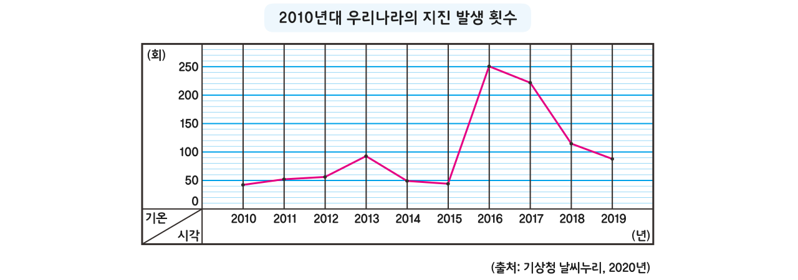

융합 연구소
우리는 안전한가
2
2010년대 우리나라의 지진 발생 횟수 그래프를 보고 2022년 이후에는 어떻게 변화할 것이라고 예상하는지 써 봅시다.

구하려는 것은 무엇인가요?
2022년 이후 지진 발생 횟수
문제를 해결하려면 어떤 것을 알고 있어야 하나요?
2010년부터 2019년까지의 지진 발생 횟수
어떤 방법으로 문제를 해결할 수 있는지 생각해 보세요.
연도별 변화의 모습을 살펴보아야 합니다.
과거에 어떻게 변하였는지를 살펴보고 이것을 바탕으로 2022년의 지진 발생 횟수가 어떻게 될지 예상해야 합니다.
생각한 방법으로 문제를 해결해 보고, 바르게 구했는지 확인해 보세요.
50회가 안 될 것 같습니다. 왜냐하면 2016년부터 지진 발생 횟수가 줄어들고 있기 때문입니다.